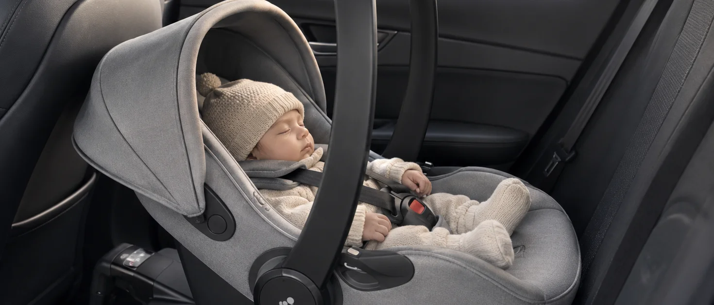
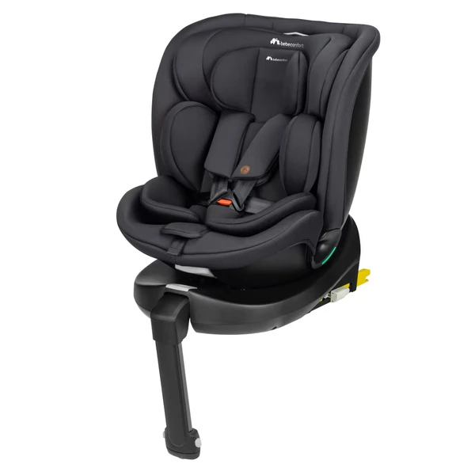
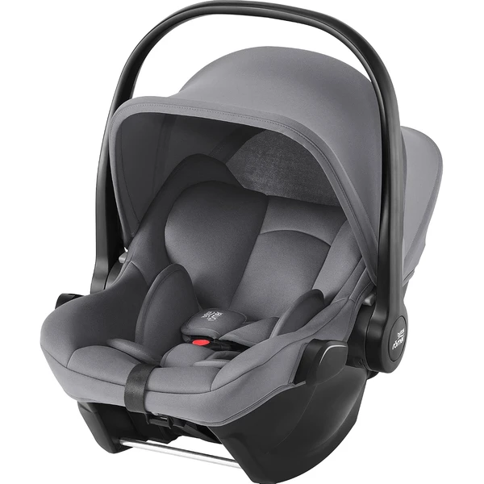

La primera silla de tu bebé: qué necesitas saber
Si esperas un bebé, la silla de coche es una de las compras que tienes que tener lista antes del parto — es obligatoria para poder salir del hospital en coche. Se llama silla de Grupo 0 o Grupo 0+, y está pensada específicamente para recién nacidos y bebés hasta aproximadamente 13 kg (entre 12 y 15 meses, según el niño).
Grupo 0 vs. Grupo 0+: ¿son lo mismo?
En la práctica, cuando hoy compras "silla de recién nacido" casi siempre te vas a encontrar con un Grupo 0+.
Qué mirar antes de comprar
- Isofix o base compatible: instalación más rápida y seguridad añadida — ver guía completa de Isofix.
- Compatibilidad con el carrito (travel system): si ya tienes o vas a comprar un cochecito, comprueba que la silla se pueda acoplar.
- Peso de la silla: al ser la etapa en la que más se saca y mete la silla del coche, un modelo más ligero se agradece.
- Reductor incluido: los recién nacidos necesitan sujeción extra los primeros meses — muchas sillas ya lo incluyen de fábrica.
¿Qué marca de sillita de coche elegir?
Compara las principales marcas de sillitas de coche y descubre sus diferencias antes de elegir la que mejor se adapte a tu familia.
Sillas de coche Grupo 0+ destacadas
Seleccionamos modelos de las marcas más buscadas para esta etapa:

Cloud G i-Size Comfort
Capazo i-Size para los primeros meses, ligero (3,9 kg) y a contramarcha, pensado para instalarse con la Base G de Cybex (se vende aparte) y compatible como sistema de viaje con cochecitos Cybex/gb mediante adaptador.
Características principales
Lo que destacan las familias
Lo sencillo que resulta instalarla —tanto con Isofix como solo con el cinturón— y su compatibilidad con los cochecitos Cybex mediante adaptadores, para usarla también como sistema de viaje.

RevolveFix Plus 360 i-Size
Silla evolutiva "todo en uno" que acompaña desde el nacimiento hasta los 12 años, con giro de 360° y arnés de 5 puntos, pensada para no tener que cambiar de silla en varios años.
Características principales
Lo que destacan las familias
El giro de 360°, que facilita mucho colocar y sacar al bebé del coche, junto con la sensación de robustez y la buena calidad de los materiales. Alguna reseña señala que la reclinación podría ser algo mayor, especialmente para bebés muy pequeños.

Baby-Safe Core
Capazo de Grupo 0+ ligero (3,9 kg) para los primeros meses, compatible con numerosos cochecitos como sistema de viaje, instalable con Isofix (base vendida por separado) o con el cinturón del coche.
Características principales
Lo que destacan las familias
Lo ligera que resulta para llevarla en brazos y lo bien que se acopla como sistema de viaje a numerosos cochecitos, además de la sencillez de instalación tanto con la base Isofix como solo con el cinturón.
Ver también las guías completas de cada marca: Cybex, Britax Römer.
¿Y después del Grupo 0+?
Cuando tu hijo supere el peso o la altura del Grupo 0+, el siguiente paso son las sillas evolutivas de Grupo 1, 2 y 3, que acompañan al niño durante muchos más años:
- Sillas grupo 1, 2 y 3 (evolutivas) → guía específica
Preguntas frecuentes
¿Hasta qué peso sirve una silla de Grupo 0+?
Hasta 13 kg aproximadamente, que suele coincidir con los 12-15 meses del bebé, aunque varía según cada niño.
¿Es obligatorio instalar la silla a contramarcha con un recién nacido?
Sí, la normativa exige que los bebés viajen a contramarcha al menos hasta el año de edad — es la posición más segura para su cuello y columna en esta etapa.
¿Puedo comprar la silla de segunda mano para el recién nacido?
No se recomienda para esta etapa: no siempre se conoce el historial completo, y es justo la etapa de mayor vulnerabilidad del bebé.
Guía informativa de Lauderem. Los enlaces a productos llevan directamente a la ficha en Amazon.es.